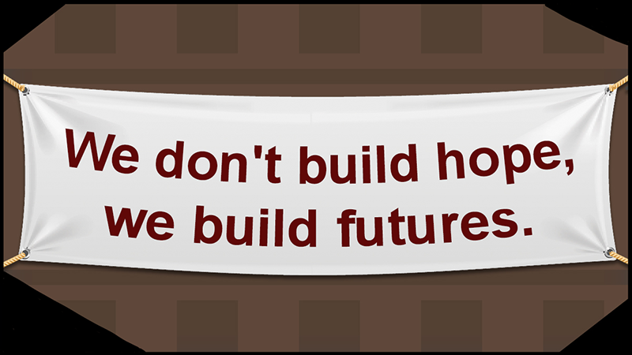

| Home | More Information | Contact |
PMU CAMPUS ELECTION |
Grab Department Chairs to fill MPP Exco position |
CHOICES IN YOUR HANDS CHOOSE WISELY! |
 |
Why Politeknik Student Voters Matter Because Politeknik students typically go to school in the communities where they and their family live, they can directly share registration and voting information with their larger community in college that may help them to solve problem as their volunteer. |
© Ling Siew Siew |